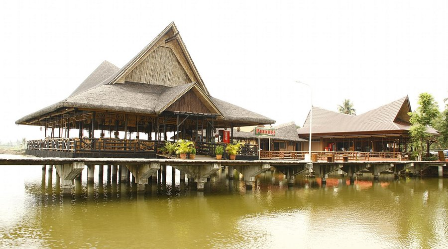
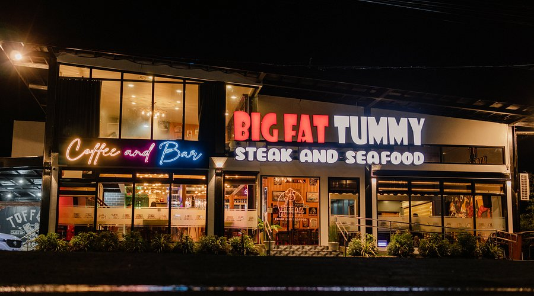

Davao del Norte features a diverse culinary landscape that ranges from cozy, garden-style eateries to bustling urban buffets. The province is particularly known for its fresh seafood, grilled specialties, and farm-to-table dining experiences that highlight local agricultural produce. Whether you are looking for an upscale meal at the Punong Restaurant with its scenic pond views, a hearty steak at Big Fat Tummy’s, or an extensive spread at 1 Oak Buffet, the dining scene reflects the region's rich flavors and hospitality. From the "Banana Capital" to the coastal flavors of Samal, every meal offers a taste of the province’s vibrant culture and fresh ingredients.

Offers a mix of local Filipino dishes and international favorites in a cozy setting.

Famous for hearty steaks, fresh seafood, and a friendly, casual dining experience.